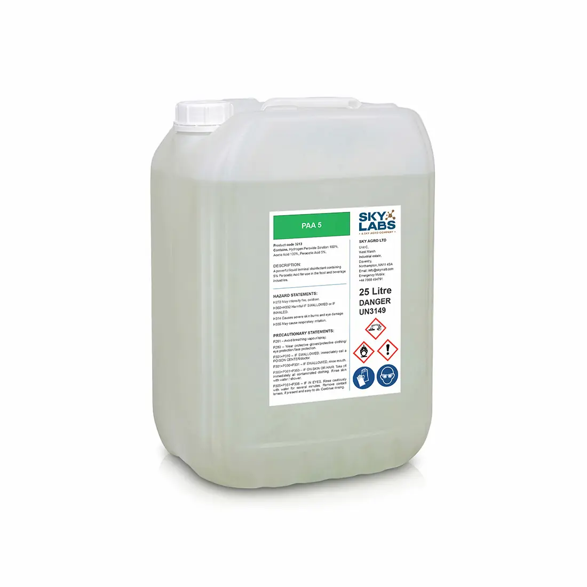

Cleaning-in-place (CIP) is central to brewery operations. Choosing the right chemicals at the right stage is what ensures consistent hygiene, product stability, and efficient turnaround between cycles.

The structure of a CIP cycle
A standard CIP cycle follows a sequence rather than relying on a single product.
Typically, it includes:
- Pre-rinse
- Caustic cleaning
- Intermediate rinse
- Acid cleaning (when required)
- Final disinfection
Each stage has a specific purpose, and skipping or misapplying one affects the overall result.
Caustic cleaning: the core step
Caustic solutions form the backbone of CIP.
They are used to remove:
- Organic soils
- Proteins
- Sugars
- Hop residues
In brewing, caustic is typically applied at elevated temperature and circulated through the system.
Performance depends on:
- Concentration
- Temperature
- Contact time
In harder water conditions, reinforced or formulated caustics are often required to maintain effectiveness.
Acid cleaning: removing mineral deposits
Over time, mineral deposits such as beer stone (calcium oxalate) build up on equipment surfaces.
Acid cleaners are used periodically to remove these deposits. They typically contain blends of nitric and phosphoric acid.
Unlike caustic, acid cleaning is not always part of every cycle. It is applied based on:
- Water hardness
- Frequency of use
- Equipment type
Disinfection: the final step
After cleaning, surfaces need to be disinfected before use.
Common options include:
- Peracetic acid (PAA)
- Hydrogen peroxide blends
These products:
- Act quickly
- Leave minimal residues
- Are suitable for final-stage application
In many cases, they can be used without rinsing, depending on concentration and application.
Chlorine-based products: where they fit
Chlorine-based cleaners are sometimes used, particularly for specific applications or heavy contamination.
They are effective against a broad range of microorganisms, but require careful handling and thorough rinsing. Their use is typically more targeted rather than part of routine CIP cycles.
Enzymatic cleaners
Enzymatic products are increasingly used for targeted cleaning.
They are particularly effective on:
- Protein build-up
- Biofilms
- Complex organic residues
They operate under milder conditions and can be useful for sensitive equipment or specific problem areas.
Choosing the right combination
No single chemical covers all cleaning requirements. Effective CIP depends on combining products correctly and applying them in sequence.
The key variables are:
- Soil type
- Water composition
- Temperature capability
- Equipment design
Optimisation often comes down to small adjustments in concentration and cycle time rather than changing products entirely.
Practical takeaways
In day-to-day operation, consistency matters more than complexity.
A well-structured CIP programme:
- Uses caustic as the primary cleaner
- Applies acid cleaning as needed
- Finishes with a reliable disinfectant
- Adjusts for water and soil conditions
Deviations from this structure tend to reduce effectiveness rather than improve it.